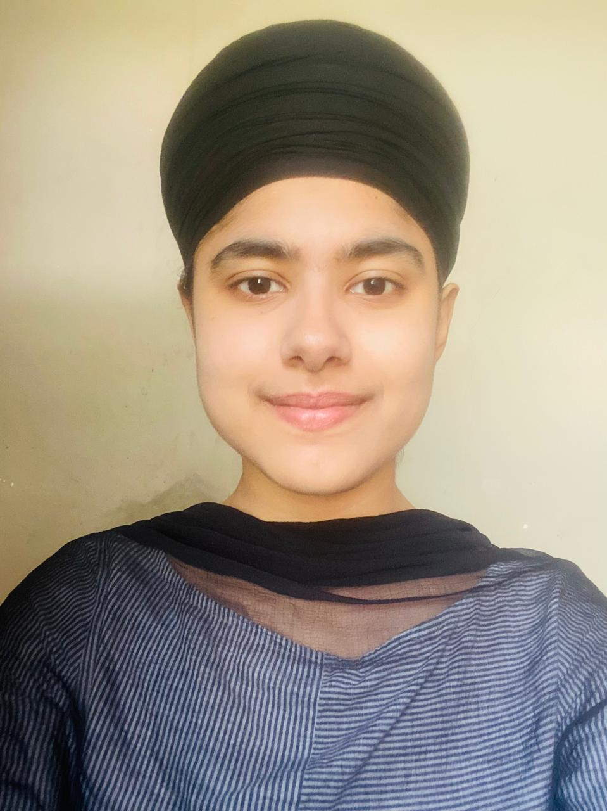

Welcome!
I am a Research Fellow at Learning Collider (New York), and am working on the Education Foundation Model Project at the Massachusetts Institute of Technology (MIT) in collaboration with Sendhil Mullainathan (MIT), Oeindrila Dube (University of Chicago), Ashesh Rambachan (MIT), and Peter Bergman (University of Texas at Austin).
I am a development economist with a primary focus on the economics of education. My research studies how learning outcomes are shaped and how they can be improved, particularly in low-income settings, with a focus on educational inequality. It also examines how beliefs, aspirations, and behavioral frictions influence human capital investments, and how targeted interventions can help individuals overcome constraints. I also work in microeconomic theory, especially general equilibrium, drawing on training in topology and measure theory.
I hold a PhD, MPhil, and MSc in Economics from the Indira Gandhi Institute of Development Research, Mumbai.
You can email me at japneetkaur.econ@gmail.com